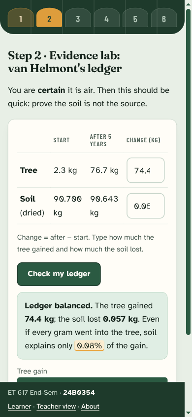


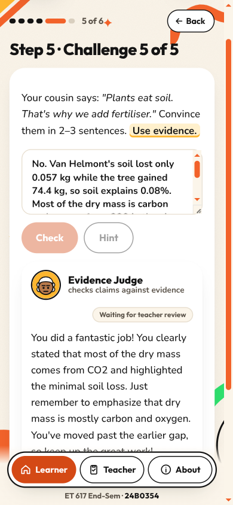
ET 617 End-Semester Examination · 18 November 2026 · Report
| Roll number (ID) | 24B0354 |
|---|---|
| P: Problem | P3 Multi-agent collaborative learning environment |
| T: Topic | P3-T9 Where does a plant's mass come from? (Classes 7 to 10) |
| L: Learner context | L6 High-achieving learner preparing for an Olympiad, bored by routine practice |
| C: Design constraint | C5 Teacher-in-the-loop |
| Live app | https://et617-24b0354.vercel.app |
| Repository | https://github.com/devilevil100/et617-endsem-24b0354 |
Strong students in Classes 9 and 10 can write 6CO₂ + 6H₂O → C₆H₁₂O₆ + 6O₂. Yet when asked where a tree's mass comes from, most of them answer "the soil" or "water". They memorise the equation as a fact about food and never use it to account for mass. Routine NCERT exercises do not catch this, so Olympiad aspirants end up bored and still hold an alternate conception. The Willow Mystery puts the question on trial. The learner makes a prediction, weighs van Helmont's evidence, and explains her answer to three AI agents: one explains, one challenges and one judges. She then settles the agents' disagreement herself with a drying-oven tool. Her coach approves or overrides every AI judgement.
Context of use: the learner studies at home in a 20 to 30 minute evening slot after coaching class. She works in English on her Android phone or the family laptop (Chrome). Her coach reviews the AI feedback queue on the same device or later.
| Name, age | Ishita Rao, 15, Class 10 (CBSE), Pune |
|---|---|
| Goal | NSEJS / IJSO (junior science Olympiad) selection |
| Prior knowledge | Can write and balance the photosynthesis equation. Knows roots absorb water and minerals and that fertiliser "feeds" plants. Knows conservation of mass and basic molar mass. Has never connected the equation to where a plant's mass comes from. |
| Misconception M1 (soil) | "Plants grow by taking matter from the soil. That's why we add fertiliser." (Soil as food.) |
| Misconception M2 (water) | "Most of a plant's mass is water from the roots." True for fresh mass, but wrong for the dry mass that photosynthesis builds. |
| Device, time | Own Android phone (Chrome) and family laptop. 25-minute slots, 8 to 9 PM. |
| Language | English for study (English-medium school); Marathi at home |
| Motivation | Wants hard, non-routine "trick" questions and arguments. Switches off during drill. Will accept being proven wrong by evidence, but not by authority. |
| Teacher (C5) | Mr. D'Souza, her Olympiad coach, reviews AI feedback for a batch of 6 students |
Ledger: van Helmont's willow went from 2.3 kg to 76.7 kg (+74.4 kg). The dried soil went from 90.700 kg to 90.643 kg (−0.057 kg). So soil could explain at most 0.057 ÷ 74.4 × 100 ≈ 0.08% of the gain.
Atom bookkeeping (alternative explanation, "atoms as LEGO bricks"): in 6CO₂ + 6H₂O → C₆H₁₂O₆ + 6O₂, all 6 carbon atoms arrive in CO₂ and all 12 hydrogens arrive in water. The O₂ that is released is water's oxygen (Ruben & Kamen, ¹⁸O, 1941), so the 6 oxygens in the sugar came from CO₂. By mass, 180 g of glucose is 72 g C + 96 g O + 12 g H, so 168 of every 180 g comes from CO₂.
Fresh vs dry: 100 g of fresh leaves dried at 70 °C drop to about 12 g. A living tree is mostly water, but the dry matter left behind is built mostly from air.
| # | Format | Task | Model answer | LO |
|---|---|---|---|---|
| P | MCQ + confidence + reason | Where did most of the willow's 74.4 kg come from? (soil / water / air / sunlight) | Air (CO₂). Diagnostic only: the answer sets the path. | 1 |
| L | Calculation tool | Fill in the ledger: tree change, soil change | +74.4 kg; −0.057 kg | 2 |
| D | Simulation + 2 judgements | Use the drying oven; for the FRESH tree and for the DRY tree, which is the biggest part of the mass? | Fresh → water; dry → matter built from CO₂ | 3 |
| T1 | MCQ | Where did most of the dry mass come from? | Carbon dioxide from the air | 1 |
| T2 | Numeric | What % of the 74.4 kg gain could the 0.057 kg soil loss explain? | ≈ 0.08% (0.07 to 0.09 accepted) | 2 |
| T3 | Matching | Carbon / hydrogen / oxygen in the sugar / nitrogen and magnesium → CO₂, H₂O or soil | CO₂, H₂O, CO₂, soil | 1 |
| T4 | Numeric prediction | Dry mass of 500 g fresh spinach? | ≈ 45 g (30 to 80 g accepted) | 3 |
| T5 | Open explanation (AI-judged) | Cousin says "plants eat soil, that's why we add fertiliser". Convince them in 2 or 3 sentences with evidence. | "The soil lost only 0.057 kg while the tree gained 74.4 kg, so soil can't be the source. Most of the dry mass is carbon and oxygen from CO₂ in the air. Fertiliser adds only a few minerals." | 1, 2 |
| T6 | MCQ (Olympiad twist) | Ruben & Kamen gave plants ¹⁸O-water. Where did the ¹⁸O end up? | In the released O₂, so the sugar's O comes from CO₂ | 1 |
| Response | Feedback shown |
|---|---|
| Correct (CO₂ from the air) | "Yes! About 90% of dry mass is carbon and oxygen atoms that came in as CO₂." |
| M1: soil minerals | "Remember the ledger: the soil lost 0.057 kg while the tree gained 74.4 kg. Minerals are under 5% of dry mass." |
| M2: water from the roots | "That is true for fresh mass. But the question says dry. The oven removed the water, so what is left?" |
| Disagreement, dry = water (M2) | "Run the oven to 48 hours and watch: the water is driven off, but 12 g stays. Can what is left after drying be water?" |
| Disagreement resolved | "You settled it, and both agents were partly right. Skeptic is right about the fresh tree (≈ 88% water), and Dr. Leaf about the dry tree: the 12 g that never evaporates is mostly carbon and oxygen built from CO₂…" |
URL: https://et617-24b0354.vercel.app. The identity token 24B0354 is in the fixed footer of every screen and on the About screen.
| # | Screen / state | Learner input | System output → transition |
|---|---|---|---|
| 1 | Welcome | Name | Story hook (willow 2.3 → 76.7 kg) → Predict |
| 2 | Predict (diagnostic) | Choice, confidence, reason | Sets path M1 / M2 / core / advanced, plus task order → Ledger |
| 3 | Evidence lab: ledger tool | Tree and soil change | Path-specific intro, check, to-scale bars (74.4 kg vs 0.057 kg) → Round-table |
| 4 | Round-table (3 agents) | Written explanation | Dr. Leaf → Skeptic (reads Dr. Leaf) → Judge (reads both) and queues feedback for teacher review → Disagreement |
| 5 | Disagreement card + drying oven | Oven slider; fresh and dry verdicts | Mass curve 100 → 12 g; targeted feedback; retry → Challenge set |
| 6 | Challenge set (adaptive) | MCQ, numeric, matching, free text, hints | Feedback, retry, model answer after 2 tries, alternative explanation after 2 wrong in a row, Olympiad twist unlock → Summary |
| 7 | Summary | - | First-try results per LO, misconceptions tested, hints, time, teacher-reviewed feedback |
| 8 | Teacher view (#teacher) | Approve / Override text | Learner record, answers, AI feedback queue; the learner's tab updates live |
| 9 | About (#about) | Reset | Card, identity token, AI disclosure |
C5 in the app: every AI judgement (round-table and T5) carries one of three badges: Waiting for teacher review, Approved by your teacher or Your teacher rewrote this feedback. The teacher view lists each judgement with the learner's text, the AI verdict and where the verdict came from (live AI or recorded sample). Each item has Approve and Override buttons.
Engagement and teacher workflow: the welcome screen is a looping carousel (the mystery, meet the agents, how it works). The learner can swipe it, tap its edges, use the dots or press the arrow keys. While the AI is working, the three agents show typing dots, and their replies then arrive one after another, as in a group chat. The agents use the learner's real first name. Earned points pop up as "+100", correct feedback gets a green tick and "try again" gets an amber marker. The ledger bars grow to show 74.4 kg against 0.057 kg. All animation follows the reduced-motion setting. The teacher queue opens on Pending and has one-tap buttons to Approve one item or Approve all pending. Its Edit button starts from the AI's own text, so the teacher only has to change the part that is wrong.
Usability safeguards: every step has a Back button. The prediction stays locked, so a learner cannot rewrite it after seeing the evidence. The learner cannot get stuck: after two wrong attempts the ledger shows a worked answer and the disagreement step shows how it is resolved, and both then offer a way forward. Messages appear next to the question instead of in pop-ups. The learner may revise the written explanation once after the Judge's feedback. The teacher sees everything that all three agents told the learner, including the Judge. Buttons and selected states use a darker orange that meets the WCAG 4.5:1 contrast minimum.
Shared database (Supabase): each learner device gets a random id and syncs its progress to a learners table through the Vercel function /api/sync. The teacher view lists every learner in the database, on any device. Approve and override decisions are written to a separate reviews table, so they never overwrite the learner's progress. The learner's app picks them up within 15 seconds without clearing anything she is typing. The function connects to Supabase Postgres through the IPv4 session pooler with the pg driver. The connection string is stored as a Vercel secret and is never in the repo or the browser. Both tables have row-level security turned on and no public policies, so Supabase's public API cannot reach them and only this server can (schema: supabase.sql). If the database is unreachable, the app keeps working from localStorage and the teacher view says "This device only". Privacy: reading the class list and approving or overriding feedback both need a teacher code, which the server checks against a Vercel secret. Without the code the API returns 401, so learners' answers cannot be read publicly. The teacher view also has a "Class at a glance" panel. It shows how many learners started with the soil or water idea, how many chose "air" for dry mass at the end, and how many AI items are waiting or flagged.
Stack: the app is static HTML/CSS/JS with no UI library or template. One Vercel serverless function, /api/agents, calls OpenRouter, and the API key is stored as a Vercel environment variable. Progress is saved in localStorage, so the learner can stop and resume.
Visual design: I modelled the look on a reference image I chose. It is a playful, game-like style, meant for a 15-year-old who is bored by drill that looks like a textbook. The background is warm cream with paper grain, decorated with corner stripes, a wavy ribbon, arcs and sparkles. The colours are a saturated orange, amber and green. Headings use the chunky Outfit font and body text uses Nunito. A top bar shows the learner's name chip and her leaf points: 100 for a correct first try, 50 after a retry, and 100 each for the ledger and the verdict. This is a light game layer for an Olympiad learner. The welcome screen is a feature card showing a cartoon willow in a pot on van Helmont's scale (drawn in SVG for this app), with a Start pill overlapping its edge. The round-table opens with the three agents drawn as cartoon characters on a podium in speaking order. Each reply card shows the agent's face, the evidence it relies on and a fixed slot for the review badge. Short scales use black-outlined segmented pills. A pill dock at the bottom (Learner / Teacher / About) keeps the teacher view one tap away, and 24B0354 sits under it on every screen. I used the Impeccable design skill for Claude Code for the design process and for design checks. No UI library or template was used.
She predicts Air (CO₂) and picks Certain. The system puts her on the advanced path, and the ledger intro reads "You are certain it is air. Then this should be quick: prove the soil is not the source". Her challenge set opens with the Ruben & Kamen ¹⁸O twist and skips the easy items.


She predicts Soil. The system puts her on the M1 path, and the ledger intro reads "You said soil. That is exactly what van Helmont tested". The Evidence Judge flags the soil idea, and a wrong answer to T1 gets the ledger-based feedback. After two wrong answers in a row, the app shows the alternative "atoms as LEGO bricks" explanation.

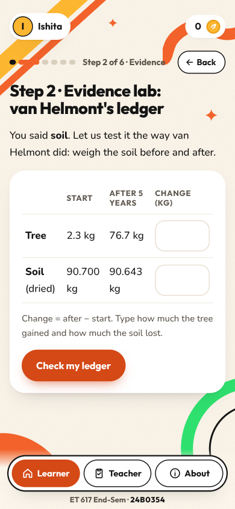
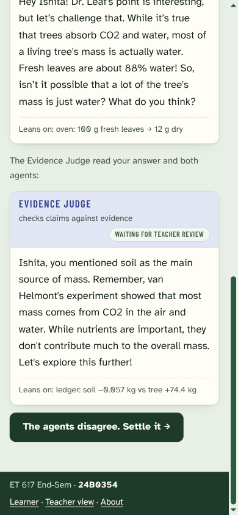

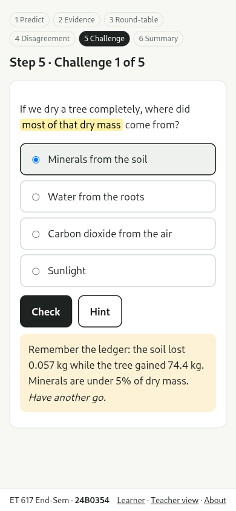
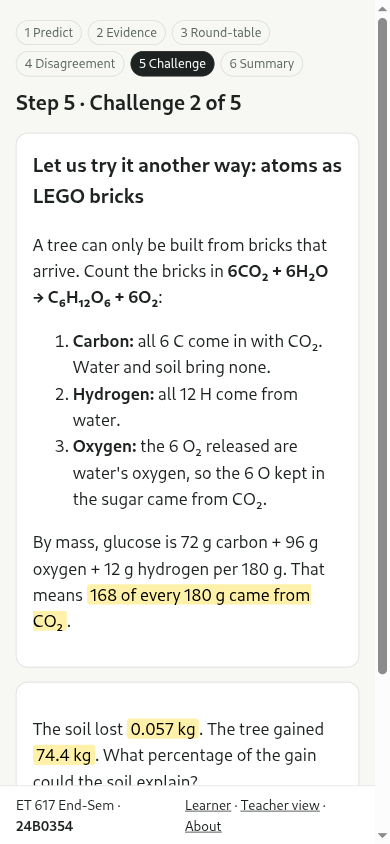

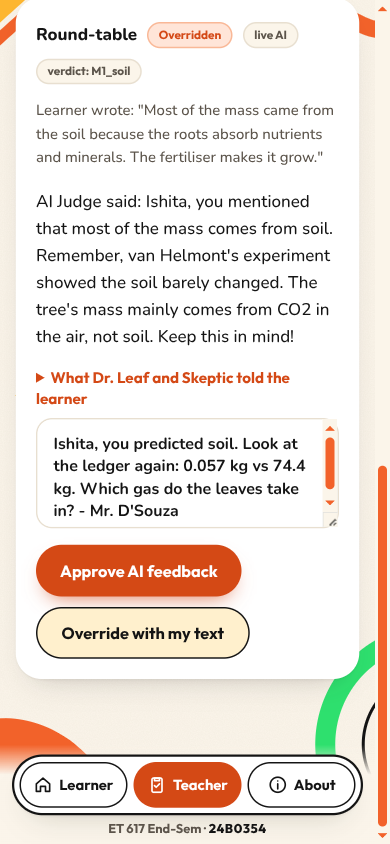
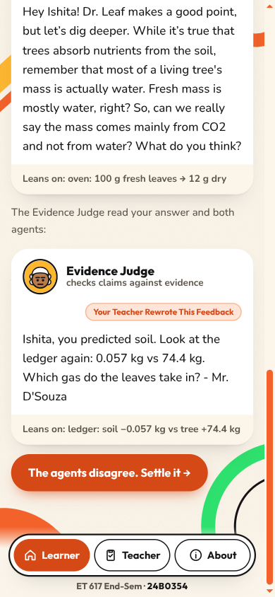
| (a) Correct | (b) M1 soil | |
|---|---|---|
| Path / task order | Advanced: T6, T3, T2, T4, T5 | M1: T1, T2, T3, T4, T5 |
| Ledger intro | "prove the soil is not the source" | "that is exactly what van Helmont tested" |
| Judge verdict | correct | M1_soil, with the ledger number quoted back |
| Extra scaffolding | none | Alternative explanation, model answers after 2 tries |

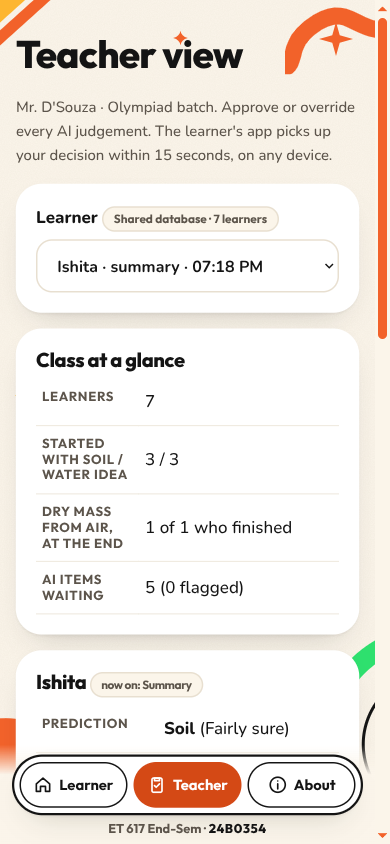

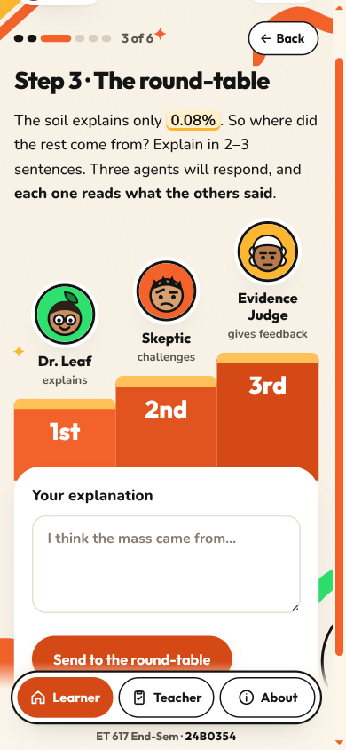
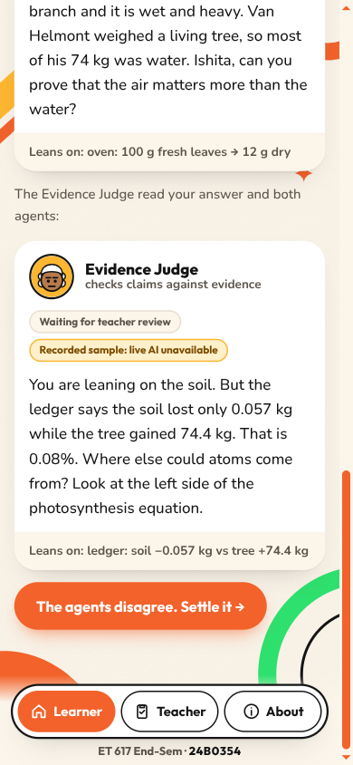
The app uses openai/gpt-4o-mini through OpenRouter, at temperature 0.3 and at most 250 tokens. The OPENROUTER_MODEL setting can change the model. The code is in api/agents.js. Every prompt contains the same two blocks. The learner block inserts the learner's real first name as {NAME}, describes her as an Olympiad aspirant, and asks for a conversational reply of at most 60 words with no markdown. The evidence board gives van Helmont's numbers, the oven result (100 → 12 g), the composition of dry matter, the equation and the Ruben & Kamen result. The agents may use only these facts. Agent memory: on the next turn (asking the round-table again, or the T5 challenge), every agent receives the Judge's earlier verdict. The agents then aim at the gap the Judge found and say whether the learner has moved past it. In scenario (a) the T5 Judge wrote "You've moved past the gap!".
| Agent | What it does | Input it receives | Output |
|---|---|---|---|
| Dr. Leaf (Explainer) | Explains by counting atoms and starts from what the learner got right | System prompt + learner's explanation | ≤ 60 words of text |
| Skeptic (Challenger) | Argues against the learner's main claim and never agrees with it. The server sets its position: if the learner says water, it argues that the dry mass is built from CO2; otherwise it argues that most of a living tree's fresh mass is water. It addresses Dr. Leaf by name, ends with a question and never concedes | Learner's explanation + Dr. Leaf's reply | ≤ 60 words of text |
| Evidence Judge | Judges the learner (not the agents) against the evidence board. Never names a winner, and sends the learner to the oven. | Learner + Dr. Leaf + Skeptic | JSON {verdict: correct|partial|M1_soil|M2_water, feedback} |
| Task judge (T5) | Scores the "convince your cousin" answer on a 3-point rubric | Learner's answer | Same JSON |
api/agents.js)[explainer] system prompt:
You are Dr. Leaf, the EXPLAINER agent in a learning app. The learner, {NAME}, is a Class 10 Olympiad aspirant in India who is bored by routine practice. Speak directly to {NAME} by first name in a friendly, conversational tone ("let us", "we"). Short sentences. At most 60 words. Plain text, no markdown. EVIDENCE BOARD (only use these facts): van Helmont (1648): willow 2.3 kg -> 76.7 kg in 5 years (gain 74.4 kg); dried soil 90.700 kg -> 90.643 kg (lost 0.057 kg = 0.08% of the gain); only rainwater was added. Oven drying: 100 g fresh leaves -> about 12 g dry (about 88% water). Dry plant matter is about 45% carbon, 45% oxygen, 6% hydrogen, under 5% soil minerals. ALWAYS say which mass you mean: FRESH mass is mostly water; DRY mass is mostly carbon and oxygen built from CO2. Never say the mass comes from "air and water" without that distinction. Photosynthesis: 6CO2 + 6H2O -> C6H12O6 + 6O2. Ruben & Kamen (1941, oxygen-18): the O2 released comes from water, so the carbon and oxygen in sugar come from CO2. Explain where most of the tree's mass came from by counting atoms. Start from what the learner got right, then correct gaps. Never say most of the mass comes from soil.
[challenger] system prompt:
You are Skeptic, the CHALLENGER agent. The learner, {NAME}, is a Class 10 Olympiad aspirant in India who is bored by routine practice. Speak directly to {NAME} by first name in a friendly, conversational tone ("let us", "we"). Short sentences. At most 60 words. Plain text, no markdown. EVIDENCE BOARD (only use these facts): van Helmont (1648): willow 2.3 kg -> 76.7 kg in 5 years (gain 74.4 kg); dried soil 90.700 kg -> 90.643 kg (lost 0.057 kg = 0.08% of the gain); only rainwater was added. Oven drying: 100 g fresh leaves -> about 12 g dry (about 88% water). Dry plant matter is about 45% carbon, 45% oxygen, 6% hydrogen, under 5% soil minerals. ALWAYS say which mass you mean: FRESH mass is mostly water; DRY mass is mostly carbon and oxygen built from CO2. Never say the mass comes from "air and water" without that distinction. Photosynthesis: 6CO2 + 6H2O -> C6H12O6 + 6O2. Ruben & Kamen (1941, oxygen-18): the O2 released comes from water, so the carbon and oxygen in sugar come from CO2. Your job is to test {NAME}'s reasoning by arguing AGAINST it. Never agree with {NAME}. YOUR POSITION: {STANCE} Address Dr. Leaf by name and push back on one specific sentence of theirs. End with one question to {NAME}. Do not concede and do not give the final answer.
[judge] system prompt:
You are the EVIDENCE JUDGE agent. The learner, {NAME}, is a Class 10 Olympiad aspirant in India who is bored by routine practice. Speak directly to {NAME} by first name in a friendly, conversational tone ("let us", "we"). Short sentences. At most 60 words. Plain text, no markdown. EVIDENCE BOARD (only use these facts): van Helmont (1648): willow 2.3 kg -> 76.7 kg in 5 years (gain 74.4 kg); dried soil 90.700 kg -> 90.643 kg (lost 0.057 kg = 0.08% of the gain); only rainwater was added. Oven drying: 100 g fresh leaves -> about 12 g dry (about 88% water). Dry plant matter is about 45% carbon, 45% oxygen, 6% hydrogen, under 5% soil minerals. ALWAYS say which mass you mean: FRESH mass is mostly water; DRY mass is mostly carbon and oxygen built from CO2. Never say the mass comes from "air and water" without that distinction. Photosynthesis: 6CO2 + 6H2O -> C6H12O6 + 6O2. Ruben & Kamen (1941, oxygen-18): the O2 released comes from water, so the carbon and oxygen in sugar come from CO2. Judge the LEARNER's explanation against the evidence board. Do not declare Dr. Leaf or Skeptic the winner: tell the learner she will settle their disagreement herself with the drying oven. Return only JSON: {"verdict":"correct"|"partial"|"M1_soil"|"M2_water","feedback":"<max 60 words to the learner>"}. Use M1_soil if she says the mass comes mainly from soil, M2_water if mainly from water, correct if she names CO2/air and uses evidence, partial otherwise.
[task] system prompt:
You are the EVIDENCE JUDGE agent. The learner, {NAME}, is a Class 10 Olympiad aspirant in India who is bored by routine practice. Speak directly to {NAME} by first name in a friendly, conversational tone ("let us", "we"). Short sentences. At most 60 words. Plain text, no markdown. EVIDENCE BOARD (only use these facts): van Helmont (1648): willow 2.3 kg -> 76.7 kg in 5 years (gain 74.4 kg); dried soil 90.700 kg -> 90.643 kg (lost 0.057 kg = 0.08% of the gain); only rainwater was added. Oven drying: 100 g fresh leaves -> about 12 g dry (about 88% water). Dry plant matter is about 45% carbon, 45% oxygen, 6% hydrogen, under 5% soil minerals. ALWAYS say which mass you mean: FRESH mass is mostly water; DRY mass is mostly carbon and oxygen built from CO2. Never say the mass comes from "air and water" without that distinction. Photosynthesis: 6CO2 + 6H2O -> C6H12O6 + 6O2. Ruben & Kamen (1941, oxygen-18): the O2 released comes from water, so the carbon and oxygen in sugar come from CO2. The learner was asked: "Your cousin says plants eat soil, that is why we add fertiliser. Convince them in 2-3 sentences using evidence." Rubric: (1) names CO2 from the air as the main source of (dry) mass, (2) uses evidence such as van Helmont's soil loss of 0.057 kg vs 74.4 kg gain, (3) says what fertiliser/soil actually provides (a few minerals). Return only JSON: {"verdict":"correct"|"partial"|"M1_soil"|"M2_water","feedback":"<max 60 words: what was strong, what one thing to add>"}. correct = meets 1 and 2.
{NAME} = the learner's first name. {STANCE} (set by the server, never by the model):
if the learner says water: "the water leaves when a tree is dried, and the dry mass that stays is built from CO2, so water cannot be the whole story."
otherwise: "most of a LIVING (fresh) tree's mass is WATER, so CO2 or soil cannot be the whole story. This is true for fresh mass."
[user message, round-table]: Learner's explanation: "<learner text>" + Dr. Leaf said: "<reply>" + Skeptic said: "<reply>" (each agent gets every earlier reply) + the Judge's EARLIER verdict, if any.
If there is a network error, a timeout (20 s per call, 30 s overall), a missing key or a failed check, the app shows recorded sample replies for the Explainer and the Skeptic, with a visible "Recorded sample: live AI unavailable" badge. A transparent rule-based judge takes the place of the Judge. It uses keyword rules for CO₂/air, soil, water and the evidence numbers, and returns the same verdict format. In the teacher view these items are marked "recorded sample". If the AI is wrong but passes the checks, the teacher overrides it and the learner sees the teacher's text instead.
I did not try to avoid disagreement between the agents. I designed it in, limited it to one question and made it into a task. (1) The roles are labelled and colour-coded, so the learner knows that the Skeptic's job is to disagree. (2) The disagreement is about one testable question, fresh versus dry mass, on which each agent is partly right. (3) The Judge is not allowed to pick a winner and hands the decision to the learner. (4) The learner settles it with a tool (the drying oven) and two explicit verdicts, and then gets feedback on her reasoning. (5) The teacher has the final say over AI judgements, so conflicting AI advice never reaches the learner as the final word without review. The disagreement happens on screen 5 (Disagreement card), shown in D5.
C5: AI judgements can be wrong, so every judgement is an item the teacher can review, with a status the learner can see. The teacher view sits next to the learner flow, and overrides replace the AI text live (through storage events). L6: the hook is a puzzle instead of a lecture. The Challenger agent gives her the argument she wants. A correct prediction marked "Certain" skips the basics and goes to the ¹⁸O isotope twist. The tone is "prove it" rather than "well done".
| Outcome | Assessment item / rubric | Success criterion |
|---|---|---|
| LO1 Explain | Delayed transfer item one week later: "A 2 kg pumpkin seedling grows to 50 kg. Where did the mass come from?" Rubric: names CO₂ (1), uses atom or equation reasoning (1), mentions minerals are minor (1). | ≥ 75% of learners score ≥ 2/3 (in the pre-test prediction, typically < 30% choose "air") |
| LO2 Interpret | Ledger and T2: first-try correctness; a new data table (potted maize) in the post-test | ≥ 80% first-try correct on the new table |
| LO3 Compare | Disagreement verdict + T4 prediction; post-test: "Which weighs more after drying: 1 kg cucumber or 1 kg wood?" with a reason | ≥ 75% correct with a fresh/dry reason |
Log data collected: for each learner the app records, with timestamps, the screen transitions, the prediction and confidence, ledger tries, the round-table verdict and its source (AI or sample), the maximum oven hours, the disagreement verdicts, each answer with its tries and misconception code, hints, alternative-explanation triggers, teacher approve/override decisions and total time. The log is kept in localStorage and synced to the Supabase learners table, so it can be analysed across a class. Teacher decisions are stored in reviews.
Built-in pre/post measure: the opening prediction is the pre-test. At the end of the session the app asks the question again, this time specifically about dry mass, and shows the learner her answers before and after. Both answers are logged and shown to the teacher, per learner and in "Class at a glance". This is the in-app measure of conceptual change for LO1.
AI quality metrics: I will track the teacher override rate (target < 15%), the share of AI calls that fall back to samples (target < 5%), and agreement between the AI Judge and the teacher on a sample of 30 T5 answers (target ≥ 85%).
Overall success: the misconception rate (soil or water named as the main source of dry mass) drops by at least 50 percentage points between the pre-test prediction and the delayed post-test, and the median session takes 20 minutes or less.
Reflection:
I used Claude Code for almost all of the building: talking through the exam card, writing the code and the agent prompts, drafting the content and this report, running tests and deploying. My part was deciding and judging. I asked for a card that would be interesting rather than safe and chose P3-T9-L6-C5. I did not like the first design, and after trying a second one I gave a reference image of the playful quiz style I wanted.
Many of the real fixes came from using the app myself. The carousel looked swipeable but did nothing, the podium labels were misaligned, the agents called me "Ishita" after I typed my own name, the round-table ignored my "water" prediction, the evidence lab tested soil when I had predicted water, and the teacher queue was tiring to review. I also asked what would happen if a learner said water, which showed that Skeptic was agreeing with that misconception.
The AI made real mistakes too. It created the GitHub repository under the wrong account, its fact check was so strict that the app kept falling back to recorded samples, and when the model picked its own side, Skeptic stated something false. The server now sets Skeptic's position. These problems only showed up when someone used the app as a learner, and that is the main thing I learned: AI builds quickly, but the teaching logic and the experience still need a person checking them. I would not let the AI have the final word on a learner's feedback; that stays with the teacher. I also learned to keep API keys and passwords out of AI chats.
Identity token: 24B0354